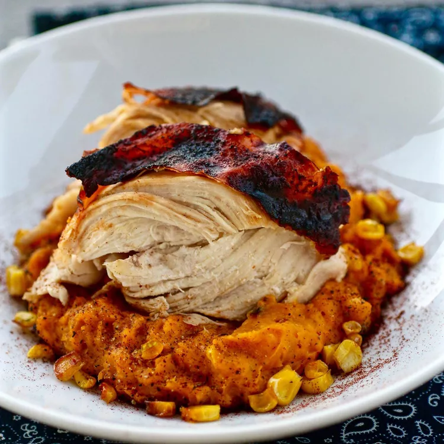

Aztec Chicken with Sweet Potato-Corn Mash

Nutrition data for this recipe includes the full amount of marinade ingredients. The actual amount of marinade consumed will vary.
- Ingrediants
- canola oil
- 6 tablespoons honey
- 1 tablespoon ancho chile powder
- ½ tablespoon garlic powder
- 2 teaspoons Mexican-style hot sauce (such as Cholula®)
- 6 (8 ounce) bone-in chicken breast halves
- 5 ears corn
- salt and ground black pepper to taste
- 2 large sweet potatoes
- Directions
- Step 1: Combine oil, honey, ancho chile powder, garlic, and hot sauce in a bowl; whisk together. Place chicken breasts in a large resealable plastic bag; pour in marinade and close bag. Marinate in refrigerator, 3 hours to overnight.
- Step 2: Place sweet potatoes on a baking sheet. Place corn in a shallow baking pan. Brush with canola oil; season with salt and pepper. Cover pan with aluminum foil.
- Step 3: Place both sweet potatoes and corn in the preheated oven. Bake until corn is roasted and brown, about 25 minutes. Continue baking until sweet potatoes are tender, about 45 minutes more.
- Step 4: Allow corn and sweet potatoes to cool until easy to handle, about 20 minutes. Cut kernels from ears of corn; transfer half to a blender. Peel and cube sweet potatoes; add to the blender. Add cream; puree. Transfer mash to a bowl; stir in the remaining corn. Season with salt and pepper. Cover and keep warm.
- Step 5: Remove chicken from bag and place on preheated grill; discard remaining marinade. Cook until no longer pink at the bone and the juices run clear, about 6 minutes per side. An instant-read thermometer inserted near the bone should read 165 degrees F (74 degrees C).
- Step 6: Transfer chicken to paper-towel-lined sheet pan to drain slightly.
Go back HOME